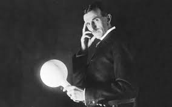

1856
"The way to get started is to quit talking and begin doing"
Nikola Tesla, (born July 9/10, 1856, Smiljan, Austrian Empire [now in Croatia]—died January 7, 1943, New York, New York, U.S.), Serbian American inventor and engineer who discovered and patented the rotating magnetic field, the basis of most alternating-current machinery. He also developed the three-phase system of electric power transmission. He immigrated to the United States in 1884 and sold the patent rights to his system of alternating-current dynamos, transformers, and motors to George Westinghouse. In 1891 he invented the Tesla coil, an induction coil widely used in radio technology.